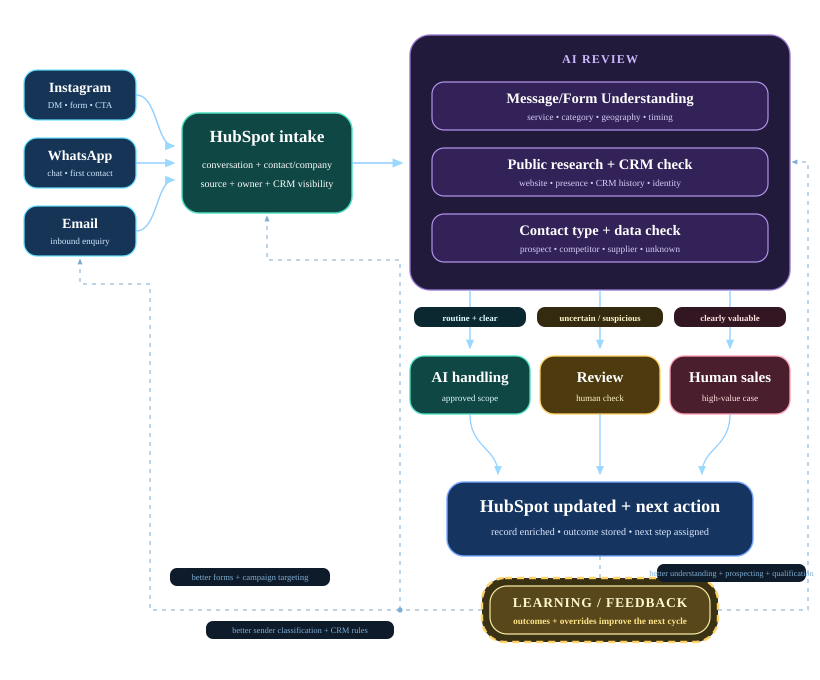

DeepWear • AI & CRM Automation brief
Automate the routine first. Earn AI autonomy later.
The opportunity is simple: release sales capacity with workflows first, add AI assistance next, and expand autonomy only when the evidence says it is safe.
1 • Three-stage proposal
Value rises in stages. Control is preserved by design.
Stage 1 • Workflow-first
Automate deterministic routine
- CRM updates, owners, tasks, reminders
- Approved fixed messages / brochures / info requests
- No auto-send to suspicious or unverifiable senders
→
Stage 2 • AI-assisted
AI prepares; humans still communicate
- Parse messages into CRM fields
- Summarize conversations
- Research company/person and draft replies
→
Stage 3 • Selective autonomy
Automate only proven narrow cases
- Routine + clear → AI handling
- Unsure / suspicious → review
- Clearly valuable → human sales
2 • Economic case
Three levels, one comparison
Payroll
€10,500
7 people × €1,500
Routine capacity
€5,250
50% of monthly payroll
Annual routine capacity
€63,000
12 × monthly routine capacity
Workflow-first net
€1,575
30% removed • €0 new monthly cost
AI-assisted net
€2,468
55% removed • €420 new monthly cost
Selective AI net
€3,368
75% removed • €570 new monthly cost
Key takeaway: current HubSpot spend is already sunk. The decision is how much extra value to capture, and how much autonomy to allow, at each stage.
3 • Operating model
How the system works, end to end

What the routing is designed to protect against
Mistake type 1
Weak lead reaches sales
Mostly wasted time. Safer to tolerate early.
Mistake type 2
Valuable lead treated as low priority
Possible lost opportunity. Minimize aggressively.
Campaignssource • channel
→
Input qualityauthentic • clear
→
Handling + outcomeAI • review • sales
↺
IMPROVEcustomer journey • forms • campaign targeting
sender classification • CRM rules • understanding + qualification
sender classification • CRM rules • understanding + qualification
Visibility = controlEvery decision and outcome is auditable.
Overrides = learningHuman corrections improve future handling.
Marketing learns tooMeasure quality, not just lead volume.
Autonomy is earnedExpand only when missed opportunities stay acceptable.
Conclusion • rollout
Roll out in three steps
Step 1
Workflow-firstCapture immediate routine-work savings.Step 2
AI-assistedAI prepares; people still control communication.Step 3
Selective AI autonomyAutomate only cases that prove safe.Bottom line: shift people away from repetitive tasks and toward valuable sales, client relationships and commercial follow-up — while giving up only as much autonomy as management chooses.
Optional annex • Replace planning assumptions with actual HubSpot costs
How this works: only incremental project costs affect the ROI calculation.
Current HubSpot spend and seat count are baseline information, so changing them does not reduce the modeled gain.
Credits, add-ons, implementation cost, evaluation period and scenario usage assumptions update the calculations immediately.
HubSpot now
€0
7 paid seats • sunk baseline
Included credits
3,000
applied before extra-credit cost
Evaluation period
12 mo
€0 one-time implementation
Live scenario calculation
Workflow-first
Credits required0
Extra credits billed0
New monthly cost€0
Net monthly gain€1,575
Net over 12 months
€18,900
AI-assisted
Credits required45,000
Extra credits billed42,000
New monthly cost€420
Net monthly gain€2,468
Net over 12 months
€29,610
Selective AI autonomy
Credits required60,000
Extra credits billed57,000
New monthly cost€570
Net monthly gain€3,368
Net over 12 months
€40,410
The three scenarios are alternatives, so the included monthly credit allowance is applied separately to each scenario.
Released capacity is not automatically cash saved; it becomes cash saving only if staffing cost is actually reduced.